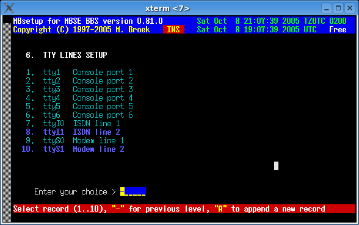
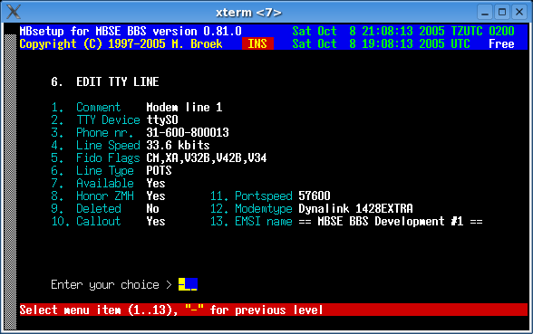
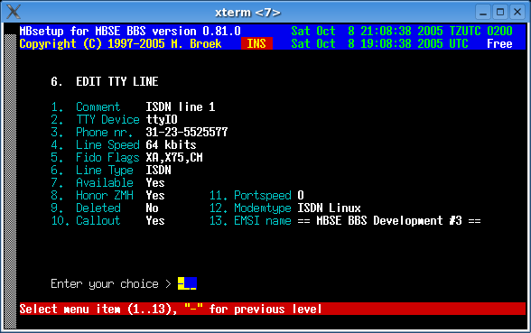

Last update 08-Oct-2005
MBSE BBS Setup - TTY Lines.
Introduction.
For each modem or ISDN line your bbs has you must setup a tty line. This also includes console lines (for local login). Since version 0.81.0 you don't need to setup network lines anymore, these are now buildin. If a call comes in over a (modem or ISDN) tty you didn't define, that call is refused.
One thing about the portspeed, this is only needed for devices connected to serial ports such as modems and external ISDN adapters. For internal ISDN cards this should be set to zero. If you set it to some other value, things still work but you will get error messages in the logs.
A note about the EMSI flags, this must match your modem capabilities, if not dialout will not work correct. It is used to see which line to use to call a certain node. If you add the X75 flag on an analogue line, your system will try to call ISDN nodes using an analogue modem. So these are not your nodelist flags as they may represent combined ISDN and analogue flags but the flags that belong to a modem.
Setup a line.
Comment A description for this line. TTY device The tty device name without /dev/ Phone nr. The phone number on this line. Line Speed The maximum line speed for this line. Fido Flags The EMSI flags for this line, include your modem flags here! Line Type Can be POTS, ISDN, Network and Local. Available Is this line available for use. Honor ZMH Deny users during ZMH on this line. Deleted If this line must be deleted. Callout Allow calling other systems from this line. Portspeed The "locked" modemspeed, 0 to 4000000 baud, only for serial ports. Modemtype The modem connected to this line. EMSI name The EMSI name presented for this (modem) line.
Some examples.



 Back to index
Back to index